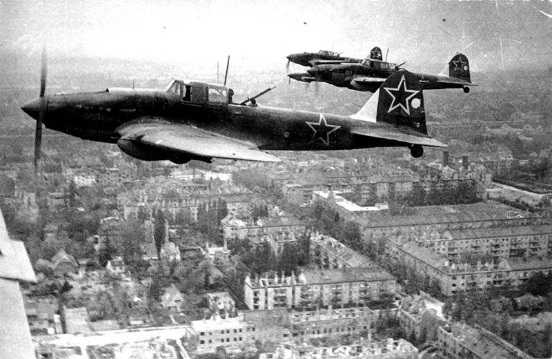

Ил-2
Самый массовый боевой самолет в истории (всего этих «илов» было выпущено 36 000 штук) считается настоящей легендой полей сражений. Одна из его особенностей — несущий бронекорпус, заменявший собой каркас и обшивку в большей части фюзеляжа. Штурмовик работал на высотах в несколько сотен метров над землей, становясь не самой сложной мишенью для наземных зенитных средств и объектом охоты со стороны немецких истребителей. Первые варианты Ил-2 строились одноместными, без бортстрелка, что приводило к довольно высоким боевым потерям среди самолетов этого типа. И все же Ил-2 сыграл свою роль на всех ТВД, где сражалась наша армия, став мощным средством поддержки сухопутных войск в борьбе с бронетехникой противника.
Як-3
Як-3 стал развитием хорошо зарекомендовавшего себя в боях истребителя Як-1М. В процессе доработки было укорочено крыло и предприняты другие конструктивные изменения для снижения веса и улучшения аэродинамики. Этот легкий деревянный самолет показывал впечатляющую скорость 650 км/ч и имел отличные летные характеристики на малых высотах. Испытания Як-3 стартовали в начале 1943 года, а уже во время сражения на Курской дуге он вступил в бой, где с помощью 20-мм пушки ШВАК и двух 12,7-мм пулеметов Березина успешно противостоял «мессершмитам» и «фоккерам».
Boeing B-17 Flying Fortress
Американская «летающая крепость» в ходе войны постоянно наращивала свою защищенность. Вдобавок к великолепной живучести (в виде, например, способности вернуться на базу с одним целым мотором из четырех) в модификации В-17G тяжелый бомбардировщик получил тринадцать 12,7-мм пулеметов.
Была разработана тактика, в рамках которой «летающие крепости» шли над вражеской территорией в шахматном порядке, защищая друг друга перекрестным огнем. Самолет оснастили высокотехнологичным на то время бомбовым прицелом Norden, построенным на основе аналогового вычислителя. Если британцы бомбили Третий рейх в основном в темное время суток, то «летающие крепости» не боялись появляться над Германией в светлое время суток.